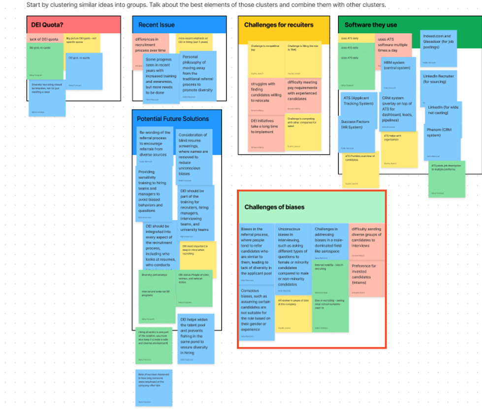
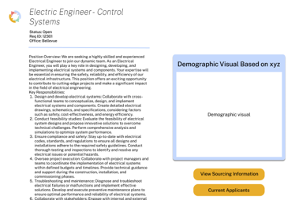

Happy to be Included
Improving DEI outcomes in the hiring process.
Overview
The need to hire diverse, qualified candidates is crucial for companies that are committed to improving Diversity, Equity, and Inclusion (DEI) outcomes. Currently, recruiters face tensions between promoting diverse candidates while maintaining equal opportunity for all. This makes prioritizing diversity a challenge. This project hopes to design a solution for recruiters to hire qualified, diverse candidates while maintaing equal opportunity and avoiding adverse impact. We partnered with included.ai for a 20 week long final capstone project in the department of human-centered design & engineering at the University of Washington.
Our guiding design question throughout this project was:
How might we improve the recruitment
process by matching hiring needs to
qualified, diverse candidates?
Preliminary Research and Literature Review
Before looking towards a solution, our team needed a better understanding of the HR recruiting landscape and how companies view diversity. This preliminary phase of our research involved a literature review. We selected twelve peer-reviewed or legislative works related to social definitions of diversity, computational methods to improve organisational diversity, and legal frameworks that impact hiring and prevent discrimination. This review helped us understand the importance of equal opportunity in hiring, existing work in the DEI software hiring landscape, and social definitions of diversity.
The most salient takeaways from this stage are: adverse impact and defining diversity . Employers cannot discriminate in hiring based on protected categories. In practice, HR professionals need to be cognizant of discrimination in hiring patterns. Adverse impact is discrimination of a protected group from employment practices that are seemingly neutral. To prevent adverse impact, companies need to ensure that no groups are unfairly hired relative to others.
Additionally, to design systems to improve diversity in recruitment, it is important to have a foundational definition of “diversity.” Diversity is a nuanced topic that incorporates countless dimensions of human experience. While it is debatably reductive, diversity in the workforce needs to be simplified for organizations to grasp and implement it. This simplification reduces diversity in its holistic nature, while making it measurable and attainable.
Interviews
After conducting a literature review, we began to interview HR recruiters and DEI professionals. We interviewed four HR recruiters. They participated in a 30 minute semi-structured interview with questions designed to assess their needs, motivations, and behaviors when attempting to hire diverse candidates.
After we conducted the interviews, we coded the transcripts and created an affinity map to pull out themes and findings.
Screenshot of our affinity map.
Our interview findings are:
Overall Research Takeaways
- Equal opportunity is fundamental to hiring.
- Identifying and sourcing diverse candidates is difficult for recruiters.
- Recruitment and hiring strategies may have unintended consequences in diversity hiring.
- Metrics-based quotas may be reductive to the complex nature of diversity.
- Diversity in hiring is not homogeneous, and differs from role to role and company to company. Additionally, applicants are also a critical stakeholder in diversity hiring.
Ideation
Once we had better insight into the hiring process and the problems they were facing with regards to DEI, we began our ideation process.
We spent time brainstorming and paper-prototyping potential solutions. From our research, we knew that adverse impact compliance, sourcing diverse candidates, and identifying diverse candidates were major issues recruiters face with hiring.
During ideation, we came up with several ideas. Some of these include:
Throughout this process, we were in constant contact with our project sponsor to ensure that we were compliant with the Equal Employment Opportunity Commission (EEOC). For example, if a proposed solution was based on nudging recruiters to review a diverse candidate for a role, that discriminates against those that the system does not define as "diverse." This leads to an unfair and illegal system.
Our final solution dealt with improving the sourcing process for recruiters. Why sourcing? During our research, we identified strict legal protections that prevent recruiters from knowing the demographics of a candidate. These protect the rights of each applicant. As such, we did not have much flexibility in designing a solution after an applicant applies, as there could be unintentional discrimination. By focusing on sourcing candidates, we circumvent this barrier while maintaining equal opportunity for all while still promoting diversity.
Prototype
Our final solution is a sourcing platform that recommends job boards and diversity organizations based on existing company shortfalls. For example, if a recruiter is hiring an engineer, our software would look at the current demographics of engineers in the firm. Based on those shortfalls, the software recommends sourcing strategies to fill in those gaps. If a company has a racially diverse engineering team, but very little women, our software would recommend sourcing strategies to hire more women.
Below is the prototype for our clickable data visualization. It is interactive and works for usability research.

Below is the prototype for where our proposed solution lives. In recruiting software like Workday or Greenhouse, we would embed our data visualization that shows the demographic information for that specific role.
While the above example is our final design, we went through several iterations. We created an initial version and tested it with the same recruiters we interviewed. Based on this usability study, we made several changes to the information displayed, the design of the data visualizations, and the interaction flow.
We envision this software to be a plug-in for HR information systems like Workday or Greenhouse. A recruiter would be able to use the plug-in and go source candidates based on the information provided.
Our final design is based on our research takeaways. By defining diversity shortfalls in a role-by-role basis, we improve diversity in teams, not just in the overall company. Also, by focusing on sourcing candidates, we ensure that no one is unfairly treated during the screening process.
Conclusion
This project was an excellent experience and involved all aspects of the design process from research, to ideation and prototyping. A lot of hidden work went into this project that I have left out for the sake of brevity. This included the technical implementation, details of the interface design, details of the research process, and the lengthy ideation journey our team had.
One of the most constricting but rewarding dimensions of the project was the legal implications. We wanted to create something that maintains equal opportunity for all while still promoting diversity. In practice this is very difficult to do. The Equal Employment Opportunity Commission is the oversight body that helps to protect our rights. Businesses must stay in compliance with the EEOC during hiring. This is how we came to the idea of sourcing diverse applicants. This delicate balance between promoting diversity and equal rights for all was incredibly interesting and something that my team had no previous experience in.
Reflection
There is a distinct difference in designing for coursework and the industry. In my experience, there are more restrictions in the industry because, as it is in the real world, stakeholder needs become stricter. This project made this distiction more apparent. For example, our legal system is something I did not have to design around before this project. I hadn't considered institutional forces having much influence over the design of technology. This project was an excellent introduction to designing with institutions like the law in mind. Additionally, there is some future work that could be done. Next steps would be to create the software so it actually works with HR information systems. This might involve bringing in an engineering team and working with them. Also, additional testing and conversations with HR recruiters and DEI professionals would polish the final design. We may have missed some crucial perspectives during our research phase. By engaging in conversations continually with our users, we can better fill in the gaps we may have missed. Overall, this project was a lot of fun! We also won the HCDE department Capstone Brave Award for this project!